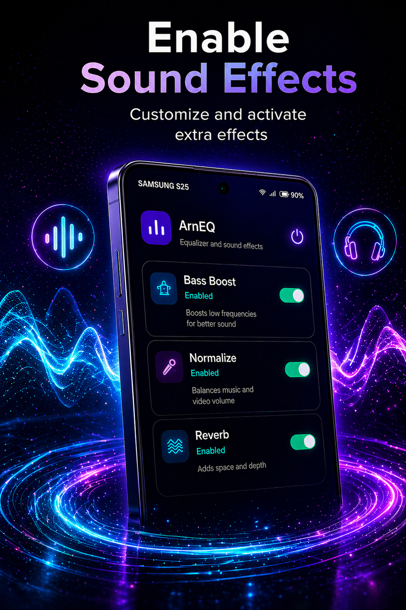
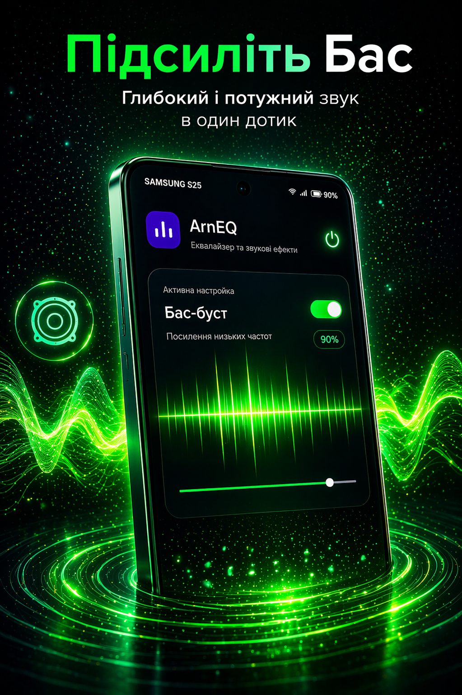
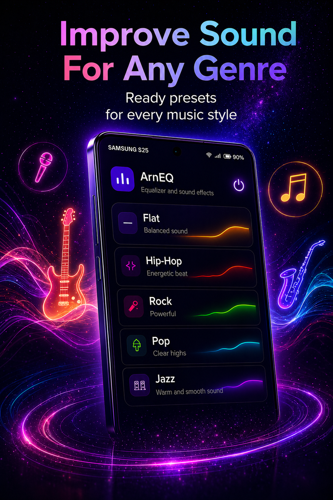
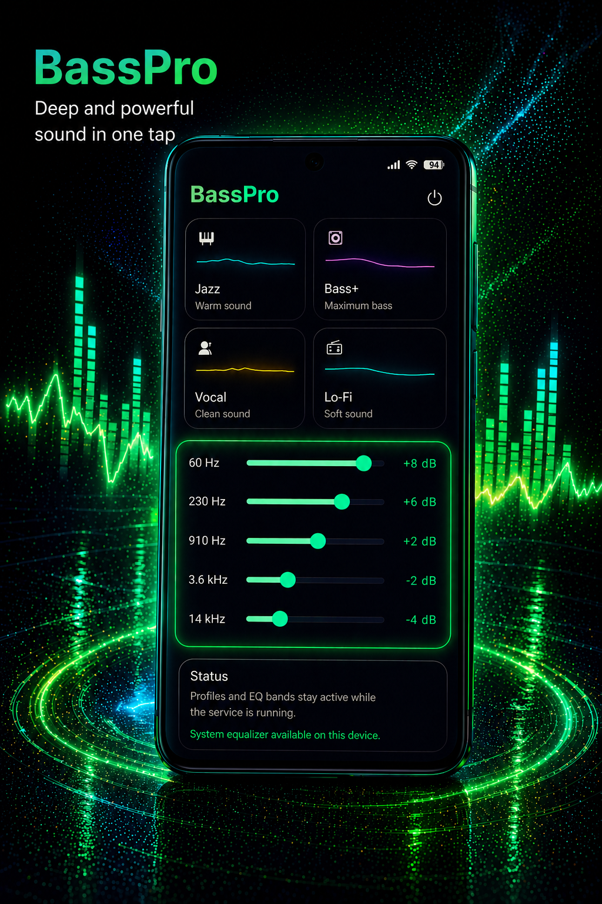

Windows + Android
ArnMesh
Private mesh networking for your own devices and trusted friends, with direct UDP and encrypted relay fallback.
- Home access and LAN-style gaming
- Owner approval for new devices
- Stable 100.90.x.x mesh addresses
Independent software studio
We build focused tools for private mesh networking, sound tuning, local network discovery, proxy workflows, and acoustic monitoring. Simple interfaces, practical features, and privacy-aware design.
A focused lineup for private mesh access, sound tuning, network scanning, proxy workflows, and ambient sound monitoring.
Project portfolio
The projects below are created and maintained by Arn1ko Studio. Some projects are in active development and may be updated before public release.
Windows + Android
Private mesh networking for your own devices and trusted friends, with direct UDP and encrypted relay fallback.
Release candidate
Equalizer, bass boost, presets, background sound control, and quick widget actions for Android.
In development
Local network scanning utility for discovering devices and checking basic network information.
Open Arn Net Scanner pageIn development
Proxy workflow helper for managing connection profiles and everyday network routing tasks.
Open ArnProxy pageIn development
Android dBA meter for monitoring ambient sound levels and changes in the acoustic environment.
Open Arn dBA Meter pageFeatured app
ArnEQ is designed for quick sound tuning: choose a preset, open sound effects, adjust bass, and keep your active profile available through background mode.




About the studio
Arn1ko Studio is an independent software developer profile. The goal is to create clear, useful utilities that solve one problem well and stay understandable for regular users.
Every app starts from a simple real-world need, not from feature bloat.
Studio apps are designed around local settings first, with clear privacy pages and simple controls.
Apps are tested around Android permissions, background behavior, widgets, and platform limits.
Contact
For app support, release verification, or privacy questions, contact Arn1ko Studio by email.